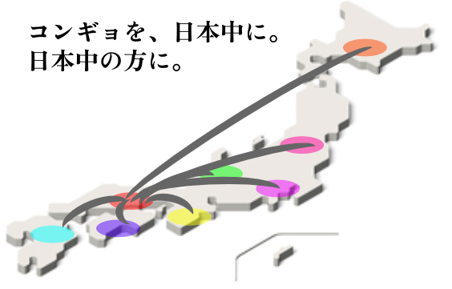
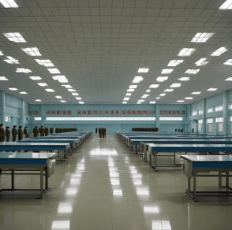
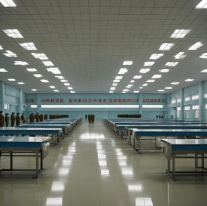

私たちのビジョン
コンギョ教会は、未来を見据え、信仰と共に歩む世界を目指しています。
ご安心ください。この教会はコンギョが好きな者たちが集まる団体です。
いわゆる「怪しい宗教」「カルト宗教」ではありません。コンギョが好きな人が語り合う、自由な場です。
コンギョ教会は今後、誰もがコンギョについて理解し、コンギョの良さを理解してくださる方が増えることを目標に精進してまいります。
今後ともよろしくお願いいたします。
また、平壌支部、岡山操山支部を作ろうと考えています。
平壌支部（イメージ）
 

岡山操山支部